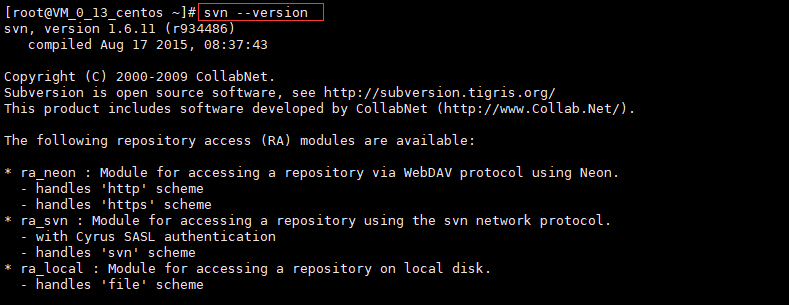

Linux服务器中安装svn
按照官网的说法，在Linux服务器中安装svn特别简单，只需要一行命令：yum install subversion就可以了

为了在安装过程中提示信息出现的时候都默认为yes（即不想提示信息弹出来），我们加上-y参数，安装svn的命令变为：yum -y install subversion
安装完成后我们输入命令：svn --version来验证是否安装成功，如果出现如下信息则代表安装成功了

创建版本库
我们选择在/var路径下创建版本库（在/var路径下创建svn目录，并在svn目录下创建repository目录），敲入命令：mkdir -p /var/svn/repository